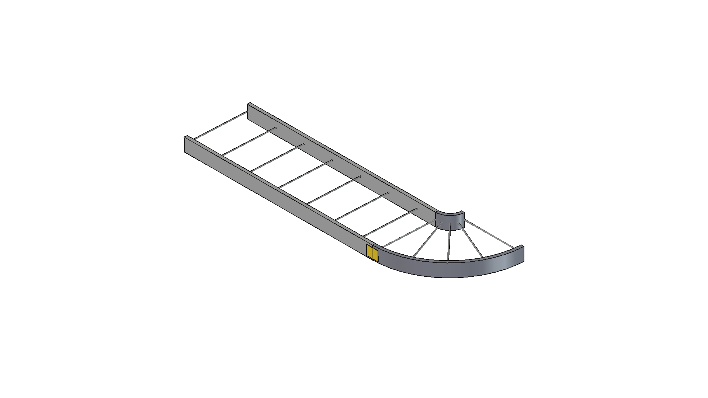
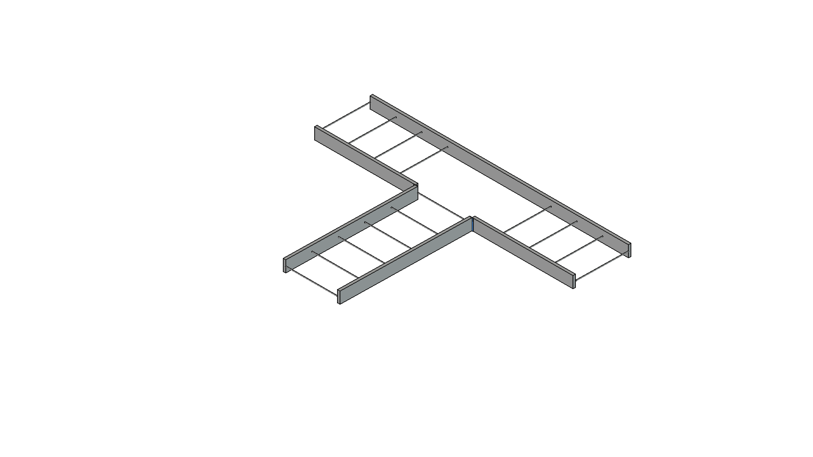
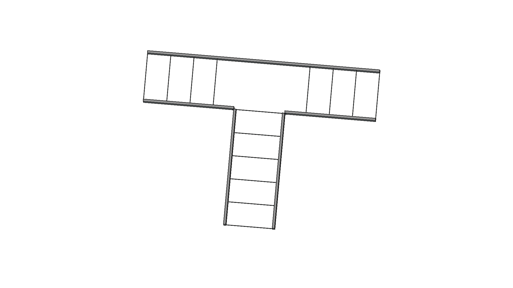
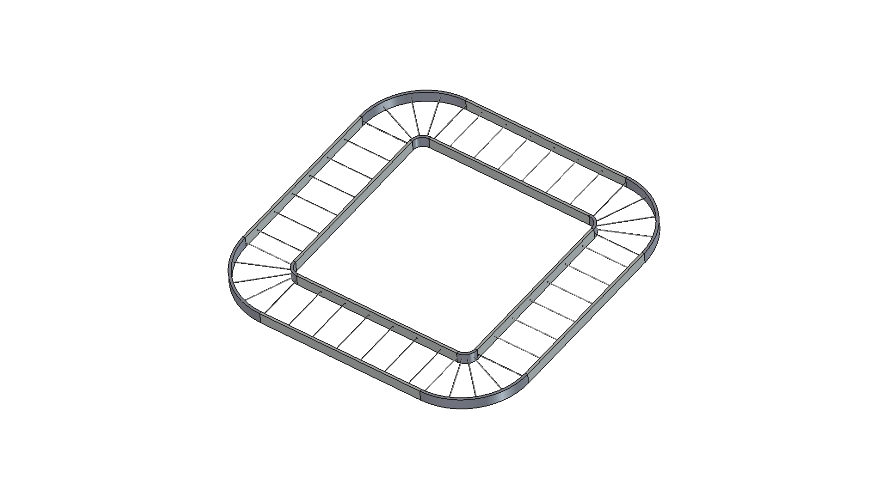
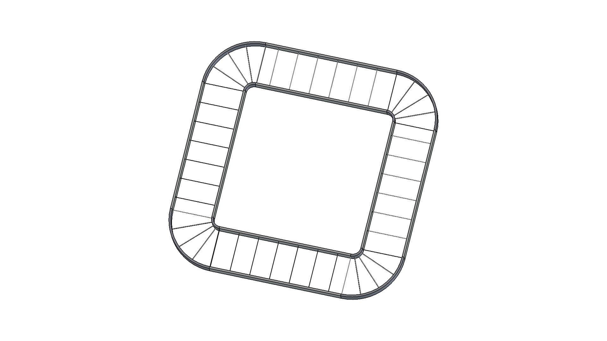
| Corner | Arc Centre | Entry Direction | Exit Direction | Rail Alignment Error | Status |
|---|---|---|---|---|---|
| B (bottom-right) | (2450, 3450) | +X → outer/inner | +Y → left/right | 0mm | PASS |
| C (top-right) | (2450, 5450) | +Y → outer/inner | -X → left/right | 0mm | PASS |
| D (top-left) | (450, 5450) | -X → outer/inner | -Y → left/right | 0mm | PASS |
| A (bottom-left) | (450, 3450) | -Y → outer/inner | +X → left/right | 0mm | PASS |
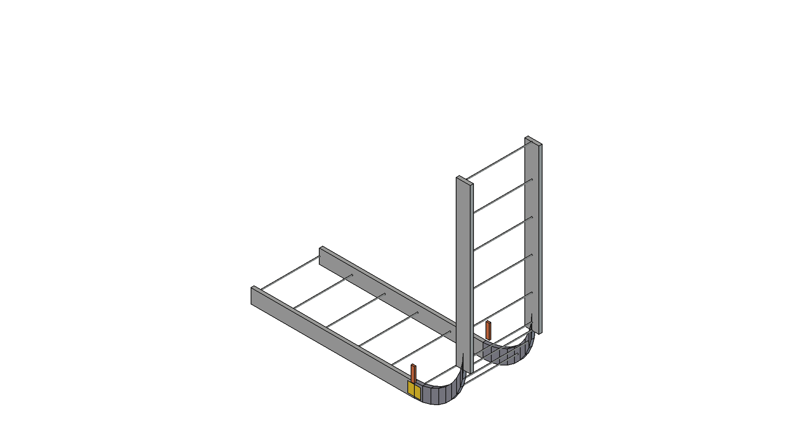
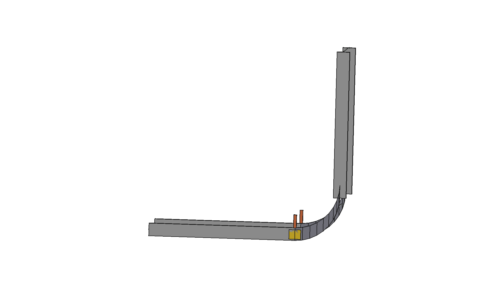
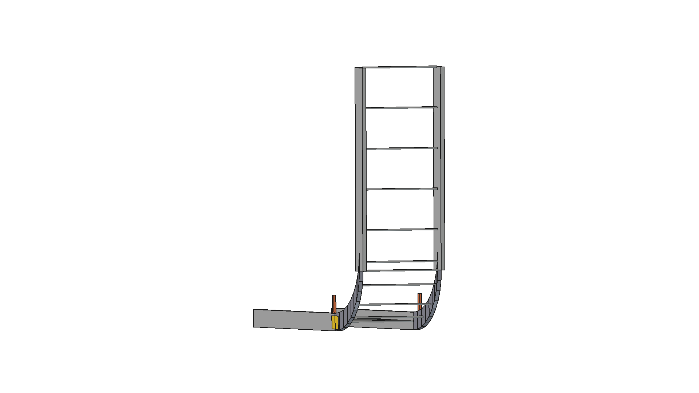
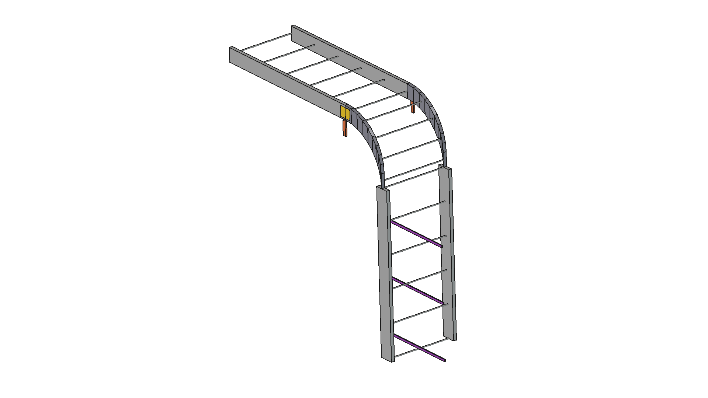
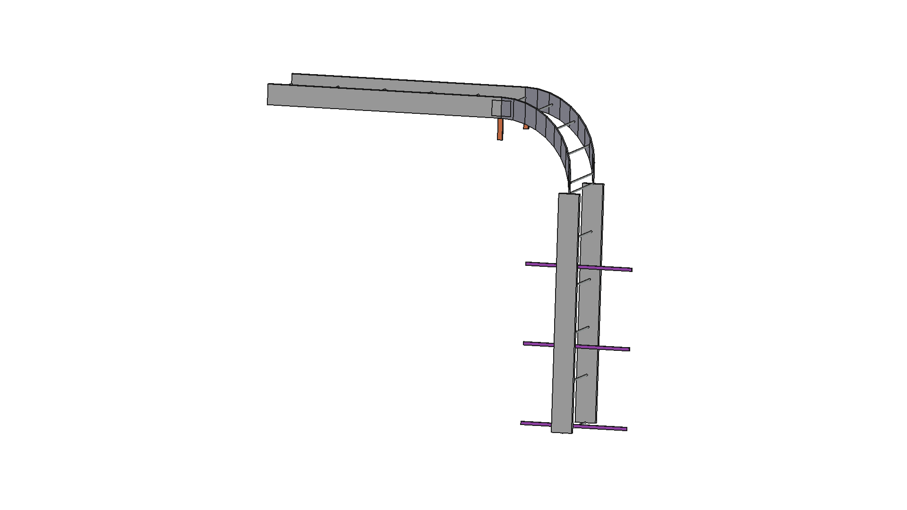
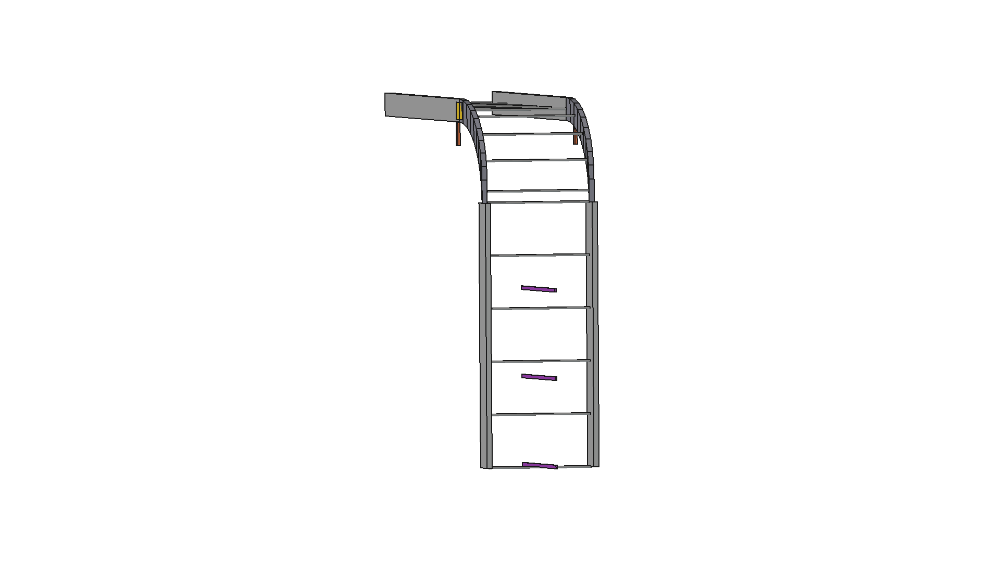
| Joint Type | Key Feature | Priority |
|---|---|---|
| Cross junction (4-way) | BOTH rails cut. Centre fully open. 4x TX brackets. | High |
| DONE - See section 4 above | COMPLETE | |
| DONE - See section 5 above | COMPLETE | |
| Straight reducer | Tapered fitting between 600mm and 300mm widths. | Low |
| S-bend offset | Two opposing elbows with short straight between. | Low |
| Straight splice (detail) | Splice plate bolted across gap between two straight sections. | Low |